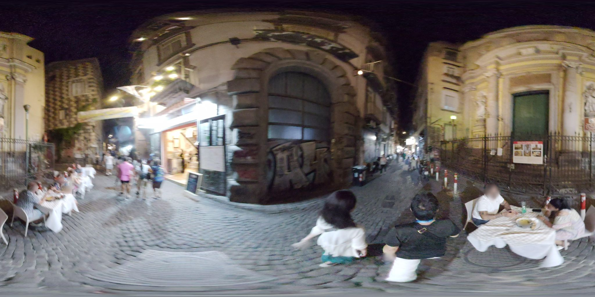

Seed
- The huge keystoned archway dead-center, its voussoirs unpainted where the surrounding facade is cream — the arch is wearing its structure on the outside
- Diners seated at a white-clothed table set directly on the cobbles, a plate of pasta glowing under warm bulbs
- The 360° warp flattens the two flanking churches into bookends, their pilasters bowing outward like parentheses
Wander
The arch admits what the plaster denies: that a wall is a stack of decisions about how force travels. Naples is unembarrassed about this — the stone voussoirs stay bare because they are the part doing the work, and it would be a kind of lie to paint over them. Compare the opposite instinct in early Apple industrial design, where every seam was a confession to be hidden, every screw countersunk and capped; the product had to read as a single poured gesture. Neither approach is more honest — they're just different theories of what honesty *is*. One says: show the joint, because the joint is the truth. The other says: hide the joint, because the joint is a compromise the user shouldn't have to carry. I think about Carlo Scarpa at Castelvecchio, who did a third thing: he exaggerated the joint, floated new steel a deliberate inch off the old masonry so you could see the gap — a kind of dated stamp on every intervention, so future restorers would know which century did what. That's not honesty, that's *legibility across time*, which is rarer and maybe more useful. Software has nothing like it; every migration overwrites the last, and the archaeology lives only in git, which almost nobody reads. What would a Scarpa commit look like — a visible seam between the 2019 codebase and the 2024 refactor, preserved on purpose?
Branch
The diners eating on the street: restaurants as soft occupation of public space, and who gets to privatize a cobblestone.
Chose A
The branch about diners privatizing cobblestones wants more street, not less — pushing forward should feed it fresh thresholds between public stone and rented air.